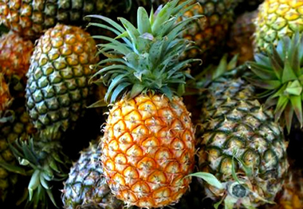

আনারসের পরিচিতি
আনারস বিশ্বের অন্যতম সেরা ফল। এর বৈজ্ঞানিক নাম আনানাস স্যাটিভাস। আকর্ষণীয় সুগন্ধ ও
অম্ল মধুর স্বাদের জন্য আনারস অনেকের কাছেই সমাদৃত। এটি রোমিলিয়েসি পরিবারভুক্ত ফল।
আনারসের উৎপত্তিস্থল হলো দক্ষিণ আমেরিকার উষ্ণ অঞ্চল। বিশেষ করে ব্রাজিল ও
আর্জেন্টিনায়।

আনারসের পুষ্টি উপাদান
পুষ্টিগুণে আনারস অতুলনীয়। এতে ভিটামিন এ, বি, সি, ক্যালসিয়াম ও অন্যান্য পুষ্টি উপাদান রয়েছে। ১০০ গ্রাম আনারসে ০.৬ ভাগ প্রোটিন, শ্বেতসার ৬.২ গ্রাম, ০.১ ভাগ সহজপাচ্য ফ্যাট, ০.৫ গ্রাম খনিজ পদার্থ, ১২.০ গ্রাম শর্করা, ০.১১ গ্রাম ভিটামিন বি-১, ০.০৪ মি. গ্রাম ভিটামিন-২, ভিটামিন সি ২১ মিলিগ্রাম, ক্যালসিয়াম ১৮ মিলিগ্রাম, ফসফরাস ০.০২ গ্রাম এবং ১.২ মিলি গ্রাম লৌহ রয়েছে। এছাড়া প্রতি কেজি ফল থেকে ৫০০ ক্যালরি শক্তি পাওয়া যায়।
আনারসের ব্যবহার
কাঁচা আনারস স্বাদে টক এবং পাকা আনারস টক মিষ্টি হয়ে থাকে। আমাদের দেশে সাধারণত পাকা আনারস খাওয়া হয়। তবে কেউ কেউ কাঁচা আনারসের চাটনি তৈরি করে থাকেন। আনারস টিনজাত ফল হিসেবেও সংরক্ষণ করা হয়, এবং এই ধরনের আনারসের চাহিদা দেশ-বিদেশের বাজারে খুব বেশি। আনারস দিয়ে জ্যাম, জেলি, স্কোয়াশ, রস প্রভৃতি তৈরি হয় এবং তা বিদেশে প্রক্রিয়াজাত করা হয়। এছাড়া আনারস থেকে কোনো কোনো সময় অ্যালকোহল ভিনেগার, সাইট্রিক এসিড উৎপাদন করা হয়। এছাড়াও বিভিন্ন ধরনের খাবার রান্নায় ও সালাদে আনারসের ব্যবহার তো আছেই।
আনারসের উপকারীতা
১. গরম-ঠাণ্ডার জ্বর, জ্বর-জ্বর ভাব দূর করে এই ফল। এতে রয়েছে ব্যথা দূরকারী উপাদান।
তাই শরীরের ব্যথা দূর করার জন্য এর অবদান গুরুত্বপূর্ণ।
২. আনারস কৃমিনাশক। কৃমি দূর করার জন্য খালি পেটে (সকালবেলা ঘুম থেকে উঠে) আনারস খাওয়া
উচিত।
৩. দেহে রক্ত জমাট বাঁধতে বাধা দেয় এই ফল। ফলে শিরা-ধমনির (রক্তবাহী নালি) দেয়ালে
রক্ত না জমার জন্য সারা শরীরে সঠিকভাবে রক্ত যেতে পারে। হৃদপিন্ড আমাদের শরীরে
অক্সিজেনযুক্ত রক্ত সরবরাহ করে। আনারস রক্ত পরিষ্কার করে হৃদপিণ্ডকে কাজ করতে সাহায্য
করে।
৪. এতে রয়েছে প্রচুর পরিমাণে ভিটামিন সি। জিহ্বা, তালু, দাঁত, মাড়ির যে কোনো অসুখের
বিরুদ্ধে যুদ্ধ করে আনারস।
৫. এতে রয়েছে খনিজ লবণ ম্যাঙ্গানিজ, যা দাঁত, হাড়, চুলকে করে শক্তিশালী। গবেষণা করে
দেখা গেছে, নিয়মিত আনারস খান এমন ব্যক্তিদের ঠাণ্ডা লাগা, গলা ব্যথা,
সাইনোসাইটিসজাতীয় অসুখগুলো কম হয়।
৬. এতে রয়েছে প্রচুর ক্যালরি, যা আমাদের শক্তি জোগায়। প্রোটিন খাবার এ ফলটি ত্বকের
মৃত কোষ দূর করে, ত্বককে কুঁচকে যাওয়া থেকে বাঁচায়। আনারস টাটকা খাওয়াই ভালো।
৭. আনারস জ্বরের ও জন্ডিস রোগের জন্য বেশ উপকারী।
৮. দেহের তৈলাক্ত ত্বক, ব্রণসহ সব রূপলাবণ্যে আনারসের যথেষ্ট কদর রয়েছে।
৯. কিছু কিছু আনারস জ্বরের ও জন্ডিস রোগের জন্য বেশ উপকারী। দেহের তৈলাক্ত ত্বক, ব্রণসহ
সব রূপলাবণ্যে আনারসের যথেষ্ট কদর রয়েছে। মোট কথা, দেহের পুষ্টি সাধন এবং দেহকে সুস্থ
সবল ও নিরাময় রাখার জন্য আনারসকে একটি অতুলনীয় এবং কার্যকরী ফল বলা চলে।